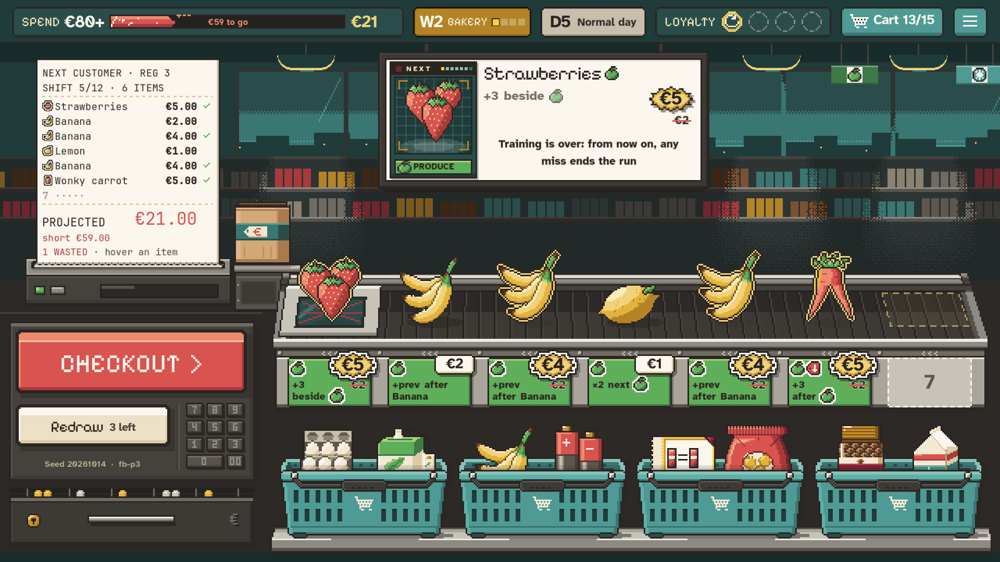

Produce chains, readable
#128 · Produce pass. How a CHAIN reads on the belt while planning, after the approved Produce links (2026-11-02): Bananas chain, Strawberries feeds a chain from just before it, a Lemon is a knot inside one, a Wonky carrot cashes it in just after it. Every chain is framed, plain pairs too. No job words, no arrows: each ticket's line says what its card does, and a card out of place turns its CHAIN chip tomato. Drawn over real captures of the build; hover a CHAIN chip.

CHAIN, the keyword
Every Produce card that works by a chain prints CHAIN as a chip, Produce green when calm, mustard when lit, tomato with a pixel cross when the card is out of place (its tooltip then gives the same reason as its WASTED step). Hovering a chip lights the chain it works on: Strawberries the chain after it, a Wonky carrot the chain before it. The monitor's NEXT line prints the same chip.
New sticker lines
- Banana: CHAIN +prev
- Strawberries: +1 each, next CHAIN
- Lemon: CHAIN middle: ×2 prev
- Wonky carrot: after CHAIN: +2 each
The prices shown
The captures are today's build on a bare loyalty card (no perks), with the belt's stickers and rail strips hidden. In Proposal, the ticket prices and lines, the receipt, the monitor's line and the top total are redrawn with the new rules. The SPEND gauge's fill and its "to go" text are still today's.